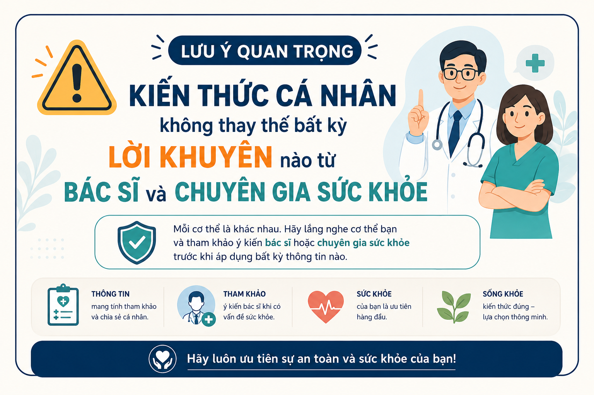
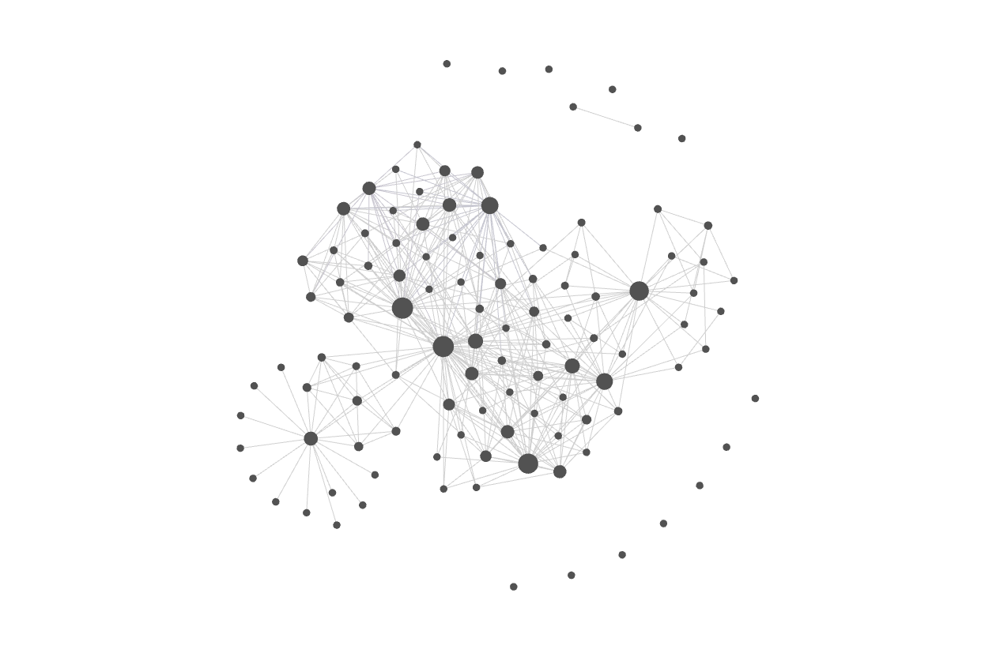
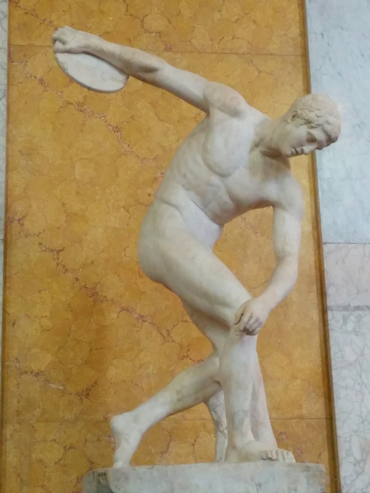
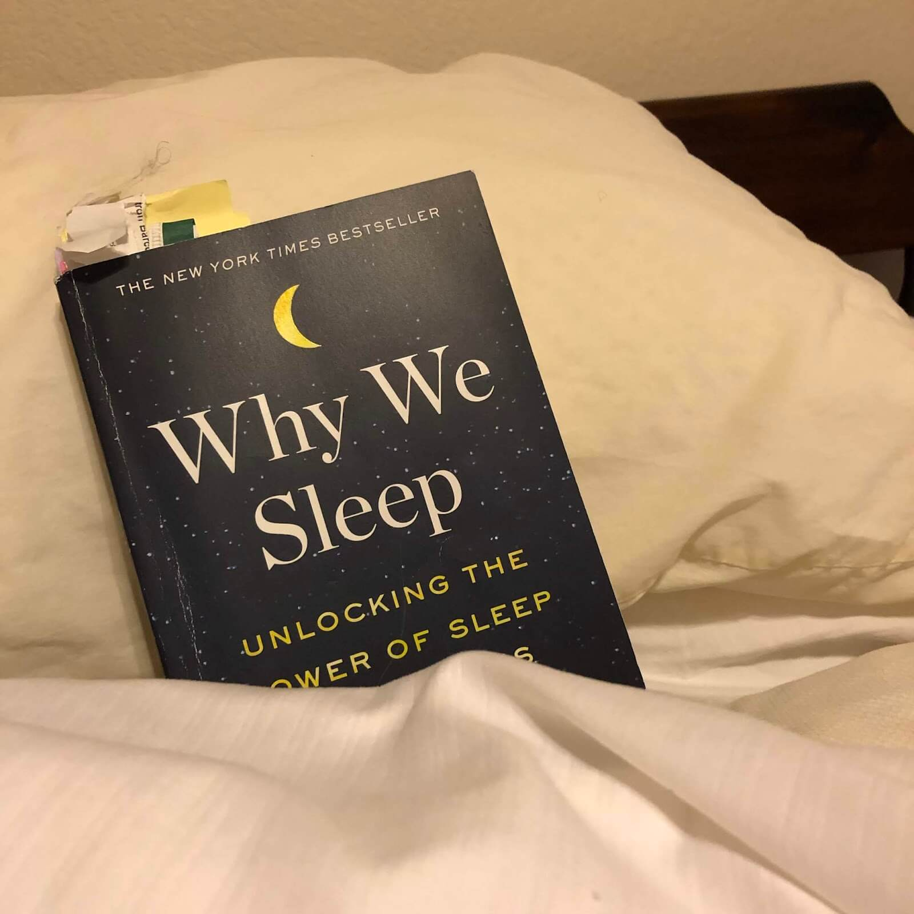
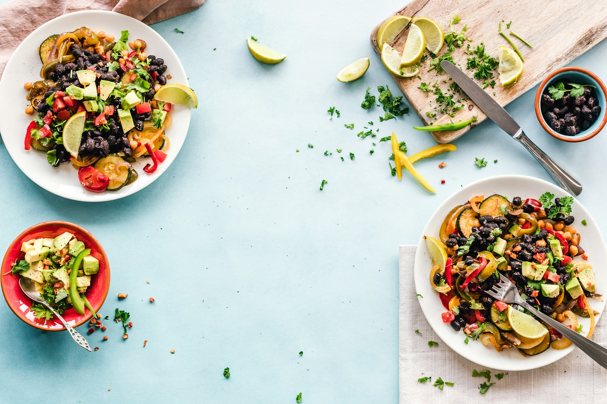
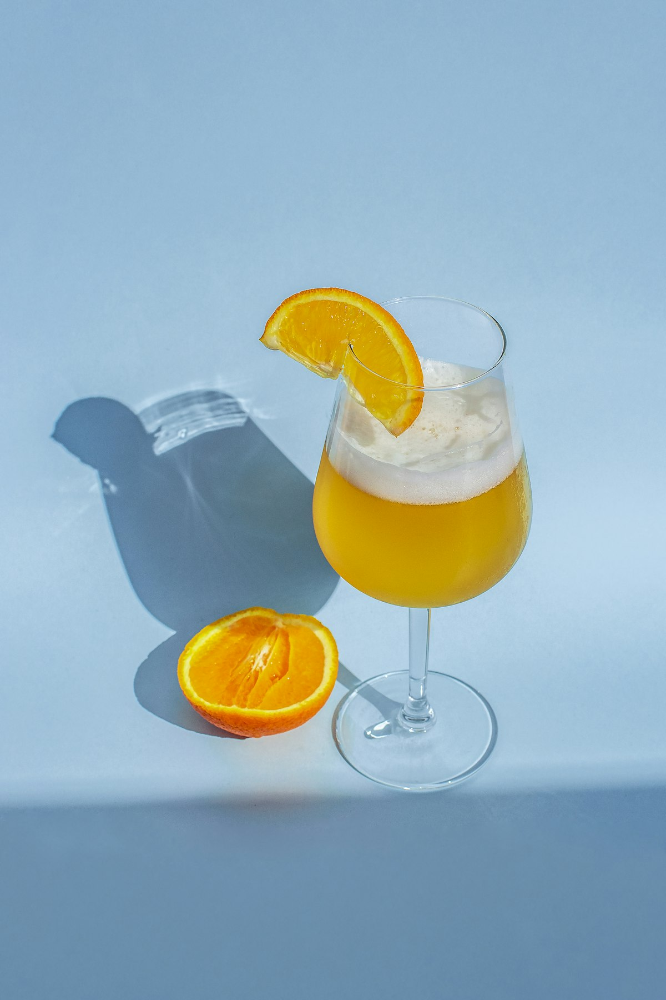
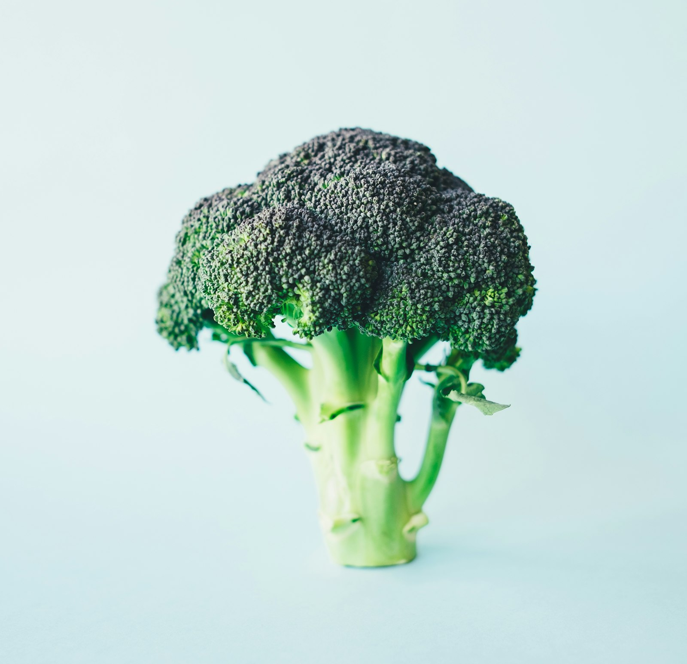
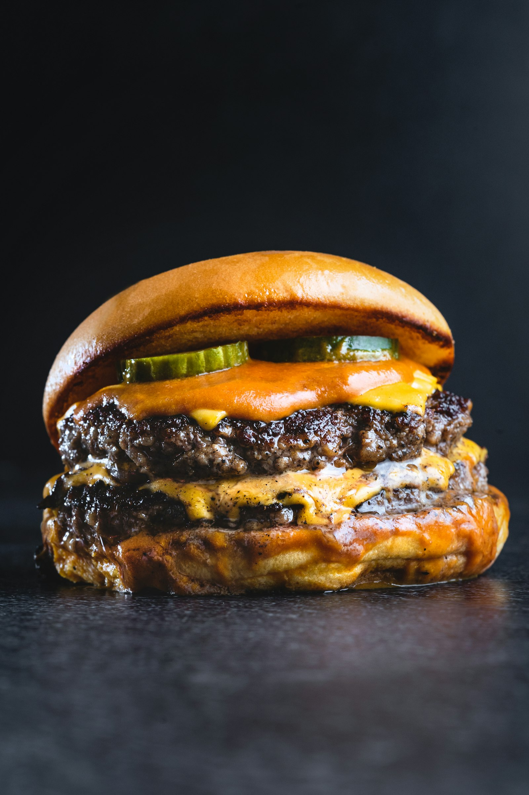
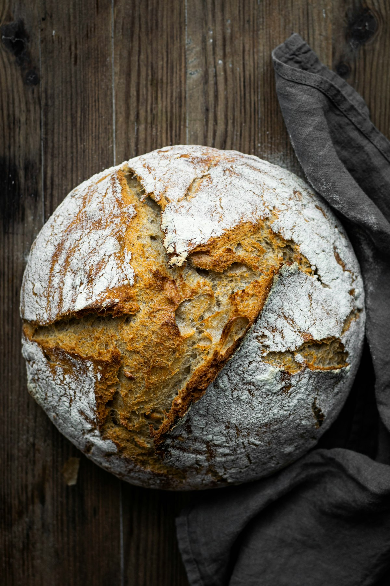

Chia sẻ từ tìm hiểu cá nhân
Không có cơ quan y tế hay chuyên gia nào kiểm chứng nội dung này — và nó không thay thế lời khuyên của bác sĩ.
- Chỉ mang tính tham khảo — mỗi cơ thể là một thế giới riêng
- Lắng nghe chính mình — chỉ áp dụng điều thật sự phù hợp
- Vấn đề sức khỏe cụ thể? — hãy hỏi bác sĩ, đừng tự đoán
Không tự ý bỏ thuốc, đổi liều, hay thay đổi điều trị đang áp dụng.

Cảm ơn anh Lưu Hiếu
Người tạo ra Lumi-wiki và skill /slidewright — nhờ đó bài thuyết trình này được dựng nên.
- Lumi-wiki — nền tảng wiki cá nhân để thu thập & kết nối tri thức
- /slidewright — dựng bài trình bày chuyên nghiệp, chiếu trực tiếp

THE ODYSSEY
Khỏe mạnh để
Thông minh hơn
“Trí tuệ minh mẫn trong một cơ thể cường tráng — thân tâm hợp nhất.”
— Thales, triết gia Hy Lạp cổ đại (624–546 TCN)
Lucas Nguyen · 2026

Mens sana in
corpore sano
— Juvenal, nhà thơ La Mã
“Thượng đế ban tặng chúng ta 2 điều là giáo dục và hoạt động thể chất”
— Plato · Triết gia Hy Lạp, từng là đô vật
“Đi bộ là liều thuốc tốt nhất của con người”
— Hippocrates · Cha đẻ y học phương Tây
Thiên tài Phục Hưng — đặt rèn luyện thân thể là 1 trong 7 nguyên tắc thông minh
— Leonardo da Vinci · Họa sĩ, nhà phát minh, nhà giải phẫu
Nobel Vật lý — vừa là thiên tài, vừa là vũ công, tay trống và họa sĩ
— Richard Feynman · Nhà vật lý lý thuyết, nghệ sĩ đa tài
Não bộ không đứng yên
Định kiến "não trưởng thành không thay đổi" đã bị bác bỏ.
3 cơ chế tái tạo não (Neuroplasticity)
Não thay đổi cấu trúc và chức năng suốt đời, không chỉ ở trẻ em:
- ✨ Neurogenesis — Sản sinh tế bào não mới ở vùng hồi hải mã
- ⚡ Synaptic Plasticity — Tăng chất lượng & tốc độ kết nối thần kinh
- 🔄 Neuroplasticity — Não tự tái cấu trúc dựa trên trải nghiệm, học hỏi và thói quen lặp đi lặp lại
Tác nhân kích hoạt mạnh nhất
Khoa học đã xác nhận: vận động thể chất kích thích sản sinh BDNF — một loại protein giúp nuôi dưỡng tế bào thần kinh, tăng cường kết nối giữa các neuron và bảo vệ não khỏi lão hóa.
📈 Công thức
Tập Aerobic
3 lần/tuần
Tăng ~2%
thể tích hồi hải mã sau 1 năm
Hồi hải mã lớn hơn ➡️ Trí nhớ sắc bén hơn
Nghiên cứu trên 120 người lớn tuổi — Erikson et al., 2011
TS. John Ratey · Đại học Harvard
Zero Hour LRPE
Chương trình thể dục buổi sáng trước giờ học tại Naperville Central (Illinois) — học sinh chạy bộ ở nhịp tim 75–90% ngay trước tiết Toán & Đọc hiểu.
🎯 Kết quả TIMSS 1999
- #1 thế giới — Khoa học
- #6 thế giới — Toán học
- Vượt qua nhiều quốc gia châu Á nổi tiếng về học thuật
Phân bón cho não bộ
Vận động nhịp tim cao kích thích giải phóng BDNF (Brain-Derived Neurotrophic Factor) — một loại protein được ví như "phân bón cho não bộ":
- Kích thích phát triển nơ-ron thần kinh mới
- Củng cố liên kết synapse
- Đưa não vào trạng thái tối ưu để tiếp thu
Đúc kết trong cuốn Spark: The Revolutionary New Science of Exercise and the Brain

TS. Wendy Suzuki · Đại học New York (NYU)
Tập Aerobic 3 buổi/tuần × nhiều tháng
- Chụp fMRI trước – sau để đo thay đổi cấu trúc não
Kết quả
- ⬆️ Gia tăng thể tích Hippocampus — vùng hải mã: trí nhớ dài hạn, học tập
- ⬆️ Củng cố Prefrontal Cortex — vỏ não tiền trán: ra quyết định, tập trung, tư duy logic
Trí thông minh linh hoạt
Tập thể dục trực tiếp cải thiện Fluid Intelligence — trí thông minh linh hoạt:
- ⚡ Xử lý thông tin nhanh hơn
- 🧩 Phân tích và giải quyết vấn đề mới
- 🛡️ Bảo vệ não khỏi suy giảm tư duy
Wendy Suzuki tự trải nghiệm sự minh mẫn từ tập thể dục rồi chuyển hướng cả phòng thí nghiệm NYU để nghiên cứu tác động của vận động lên não
TED · “The Brain-Changing Benefits of Exercise”
13 phút · 11 triệu lượt xem
TS. Arthur Kramer · Đại học Illinois (UIUC)
Đảo ngược lão hóa não bộ
Thử nghiệm trên nhóm 60–79 tuổi lối sống ít vận động, chia 3 nhóm: đi bộ nhanh, giãn cơ/thăng bằng, và không tập — duy trì 6–12 tháng.
📊 fMRI cho thấy (nhóm đi bộ nhanh)
- ⬆️ Gia tăng thể tích chất xám & chất trắng
- ⬆️ Tăng cường kết nối mạng lưới thần kinh
- 🔄 Phục hồi linh hoạt thần kinh tương đương người trẻ hơn 10–15 tuổi
Tăng sinh mạch máu não
- Vận động aerobic tăng lưu lượng máu và oxy lên não
- Kích thích tăng sinh mạch máu mới (angiogenesis)
- Giúp não bộ tự tái cấu trúc và sắp xếp lại mạng lưới thần kinh hiệu quả hơn

50% là học tập — hôm nay tập trung vào 50% còn lại: cơ thể
Sức khỏe = Vật lý + Tinh thần
Sức khỏe vật lý
Vận động · Giấc ngủ · Dinh dưỡng · Đường ruột
Sức khỏe tinh thần
Hơi thở · Ngôn ngữ · Kết nối · Nghỉ ngơi
Sức khỏe vật lý
Chiếm 50% công thức trí thông minh
5 cấp độ vận động giúp thông minh hơn
Dựa trên nền tảng từ Spark — John Ratey, Harvard Medical School
- 1. Tăng oxy lên não — tim bơm máu hiệu quả → tỉnh táo, tập trung cao
- 2. Tăng dopamine & serotonin — động lực, hạnh phúc → học tập hiệu quả hơn
- 3. Neurogenesis — sản sinh tế bào não mới ở vùng hồi hải mã
- 4. Tăng chất lượng synapse — truyền dẫn tín hiệu nhanh và hiệu quả hơn
- 5. Tăng phản xạ suy nghĩ — xử lý thông tin nhanh, linh hoạt hơn
Cấp 1-2: ngắn hạn, cảm nhận ngay sau khi chạy · Cấp 3-5: dài hạn, thay đổi cấu trúc não
Cardio 20/80: Trái tim khỏe — Não minh mẫn
- Chạy bộ / đi bộ nhanh ngoài trời — oxy nhiều hơn máy chạy trong nhà
- Đạp xe — kéo dài khớp chân, ít chấn thương
- Bơi lội — toàn diện nhất; bơi biển hấp thụ vi khuẩn tự nhiên
lúc nghỉ Tim khỏe → oxy lên não
Peter Attia: VO₂ max và nhịp tim lúc nghỉ dự đoán tuổi thọ tốt hơn bất kỳ chỉ số nào khác
Sức mạnh 20/80: Cơ bắp — Lá chắn sức khỏe

- Kettlebell — "vua mọi bài tập"
- Deadlift — thanh đòn ngang hoặc lục giác
- Squat với tạ — cơ đùi kích thích hormone tăng trưởng mạnh nhất
- Hít đất / Plank — tăng dần biến thể
- Squat — cơ đùi hấp thụ glucose cực tốt
- Hít xà đơn — tăng sức mạnh + chiều cao
“Sức mạnh là mẹ của mọi kỹ năng thể chất” — Pavel Tsatsouline
Peter Attia: người ít cơ bắp có nguy cơ tử vong cao gấp 3 lần · Cơ bắp kiểm soát đường huyết, giảm chấn thương
Naperville Central High School · Illinois, Hoa Kỳ — 1999
Đỉnh điểm khủng hoảng béo phì
thiếu niên — cả nước Mỹ
Giảm 10 lần so với trung bình
nhờ tập cardio trước giờ học
Giấc ngủ: nghịch lý lớn nhất của tiến hóa?
1/3 cuộc đờiBất động. Mù. Điếc. Không ăn. Không phòng vệ.
Nếu không thiết yếuĐây là sai lầm chết người nhất trong lịch sử tiến hóa.
NhưngMọi loài có não đều ngủ. Tiến hóa chưa bao giờ loại bỏ nó.
Vậy trong 8 tiếng đó, cơ thể chúng ta đang làm gì?

Cơ thể nghỉ, nhưng não thì không
Chuyển thông tin học trong ngày từ bộ nhớ tạm sang bộ nhớ dài hạn — không ngủ đủ, học xong quên hết.
Hệ glymphatic thanh thải chất thải chuyển hóa trong lúc ngủ sâu — gồm cả amyloid beta, chất liên quan Alzheimer.
Giấc ngủ REM hạ nhiệt phản ứng của hạch hạnh nhân — tách cảm xúc mạnh ra khỏi ký ức, giúp bạn ổn định hơn.
Ngủ sâu kích hoạt miễn dịch, hormone tăng trưởng, sửa chữa mô — cơ thể tự vá chính nó mỗi đêm.
Theo Đông y: 23h–3h sáng là khung giờ 🟢 Mật và 🟤 Gan hoạt động mạnh nhất để thải độc; 🫘 Thận cũng được cho là hoạt động tích cực trong khung giờ này.
Bạn không ngủ để nghỉ. Bạn ngủ để não làm việc mà nó không làm được khi bạn thức.
Hãy phải quan tâm đến giấc ngủ của chính mình.
Vậy làm thế nào ngủ thế nào cho tốt?
Một đêm ngủ được tổ chức như thế nào
- Chu kỳ 90 phút × 4–6 chu kỳ mỗi đêm, 5 giai đoạn mỗi chu kỳ
- Giai đoạn 1-2 — NREM nông (~50%): giai đoạn 2 giàu thoi ngủ, phục hồi khả năng học & củng cố trí nhớ vận động & chặn tiếng ồn bảo vệ giấc ngủ
- Giai đoạn 3-4 — NREM sâu: phục hồi thể chất, miễn dịch, thanh thải độc tố
- Giai đoạn 5 — REM: phục hồi nhận thức, tổng hợp thông tin, âm thầm chữa lành nỗi đau trong ký ức mỗi đêm
- Thức dậy cuối chu kỳ (bội số 90′) → tránh mệt mỏi giữa chu kỳ
Đầu đêm não đục thô ký ức, cuối đêm mới là lúc tinh chỉnh từng chi tiết. Cắt 2 tiếng cuối là bỏ dở tác phẩm ngay trước công đoạn quan trọng nhất.
Não hoạt động như khi thức.
Cơ thể tê liệt hoàn toàn.
- Tổng hợp thông tin trong ngày
- Giải quyết vấn đề sáng tạo
- Phục hồi sự chú ý (attention)
- Bị ức chế bởi:
- 🍺 Bia rượu — cắt đứt REM
- ☕ Caffeine — bán thải ~6 tiếng
- 😰 Stress — giữ não ở sóng beta
REM chiếm ~20-25% giấc ngủ · Mộng du xảy ra ở NREM sâu, không phải REM — vì trong REM cơ thể đã bị khóa
Nhịp sinh học: Đồng hồ bên trong
- Hormone "báo hiệu giờ ngủ" — do tuyến tùng tiết ra khi trời tối
- Ánh sáng xanh từ màn hình ức chế melatonin → trì hoãn buồn ngủ
- Ánh sáng hoàng hôn (đỏ/cam, cường độ thấp) kích thích melatonin — giúp cơ thể nhận tín hiệu "trời sắp tối" đúng lúc
- Melatonin không phải thuốc ngủ — nó là tín hiệu thời gian, không phải tác nhân gây ngủ
- Hormone "áp lực buồn ngủ" — càng thức lâu, càng tích tụ nhiều, càng buồn ngủ
- Caffeine chiếm thụ thể adenosine → che giấu mệt mỏi
- Thời gian bán thải caffeine: ~6 tiếng — Nên uống trước 14h chiều
- Adenosine vẫn tích tụ → "caffeine crash" khi hết tác dụng
Nhịp sinh học kiểm soát bởi 2 yếu tố: ánh sáng (melatonin) + thân nhiệt (dao động ~2°C/ngày)
Làm thế nào để có một giấc ngủ hiệu quả?
- Ra nắng buổi sáng ≥30 phút — chỉnh nhịp sinh học đúng giờ
- Vận động đều đặn trước giờ ngủ 2–3 tiếng
- Giữ giờ ngủ & giờ dậy cố định mỗi ngày — kể cả cuối tuần
- Ngừng caffeine sau 14h, hạn chế rượu bia — cả hai đều cắt giấc ngủ sâu
- Phòng ngủ tối, mát (18–25°C)
- Không dùng điện thoại và máy tính trước 1h khi đi ngủ, ánh sáng xanh ức chế melatonin hơn 50%
- Thức >20 phút vẫn chưa ngủ được? Dậy làm gì đó thư giãn, đừng nằm cố
Không có một "viên đạn bạc" — chỉ có thói quen nhất quán mỗi ngày mới tạo ra giấc ngủ hiệu quả
Ngủ trưa: khoản đầu tư lãi nhất trong ngày
Khoảng 12h–14h nhịp sinh học có một đợt giảm tỉnh táo tự nhiên — chợp mắt đúng lúc đó trả lại cho bạn cả buổi chiều
“Ngủ trưa giúp tôi có hai buổi sáng mỗi ngày”
— Winston Churchill
Ngủ trưa sao cho hiệu quả?
- 15–30 phút — ngủ nông, dễ thức dậy, reset attention
- Một số nghiên cứu ghi nhận ~20–30 phút là khoảng tối ưu
- Tránh >45 phút — vào ngủ sâu, thức dậy mệt hơn (sleep inertia)
- Nên ngủ sau 12:00 và trước 14:00 để không ảnh hưởng nhịp sinh học chính
- Uống cà phê → ngủ ngay 20 phút → tỉnh dậy gấp đôi tỉnh táo
- Caffeine mất ~20 phút để ngấm vào máu
- Ngủ đúng 20 phút — vừa kịp lúc caffeine bắt đầu có tác dụng
Nghỉ trưa một chút, sống thọ trăm năm
Sau tập luyện và nghỉ ngơi đúng
là ăn uống đúng
Ba trụ cột hoạt động cùng nhau. Một bên yếu, cả hệ thống suy yếu.
Tạo nền tảng. BDNF tăng, não sẵn sàng tiếp thu. 30% công thức.
Não củng cố, dọn rác. Giấc ngủ = làm việc chủ động.

Nguyên liệu đầu vào. Não = 20% năng lượng cơ thể. 20% công thức.
Không có "magic bullet". Chỉ có chu trình nhất quán, mỗi ngày.
Khoa học giả: Đừng để bị lừa
Tuyên bố nghe rất khoa học nhưng không có bằng chứng thực nghiệm. Trong ngành thực phẩm, đó không phải nhầm lẫn — đó là mô hình kinh doanh.
- Chế độ ăn kiềm — Robert O. Young viết sách bestseller; 2014 thừa nhận trước tòa là lừa đảo, bồi thường 105 triệu đô
- Nước kiềm — “kiềm hóa cơ thể” không có bằng chứng khoa học
- “Hương vị tự nhiên” — đánh tráo khái niệm trên nhãn
- Hỏi ba câu: ai tài trợ nghiên cứu? cỡ mẫu bao nhiêu? đã bình duyệt chưa?
- Đọc Bad Science (Ben Goldacre) và How to Lie with Statistics (Darrell Huff)
- Quy tắc vàng: nghe quá tốt để là thật — thường là không thật
Nguồn calo quan trọng hơn lượng calo
Cùng 1000 calo nhưng…
- 90% tinh bột → +0,1 kg
- 90% chất béo → −0,4 kg
Cùng 1 củ cà rốt
- Ăn sống → hấp thụ 6 calo
- Nấu chín → hấp thụ 31 calo
Vậy nếu không phải calo — thì cái gì? Câu trả lời bắt đầu từ đường.
Đường: thứ bạn uống mỗi ngày mà không đếm
- Đường kích hoạt dopamine cùng con đường thần kinh với chất gây nghiện
- Nghiện đường làm teo vùng hồi hải mã — nơi phụ trách học tập và trí nhớ
- Chỉ 12% người Mỹ đang ở trạng thái chuyển hóa cân bằng
“Chưa bao giờ trong lịch sử con người tiêu thụ lượng đường lớn đến vậy.” — Daniel Lieberman, Exercised
Đường ẩn: đọc nhãn như một người hoài nghi
- Bẫy khẩu phần — nhãn ghi cho 100 ml nhưng chai 500 ml. Nhân 5 lần rồi hãy đọc.
- Thứ tự thành phần — xếp giảm dần theo khối lượng. Đường đứng đầu thì bỏ xuống.
- Đuôi −ose là đường — dextrose, sucrose, fructose, maltose.
- Tên ngụy trang — syrup, si-rô bắp, mạch nha, đường nâu, đường mía, mật hoa.

“0 calo” không phải lối thoát: aspartame, sucralose làm đổi hệ vi sinh đường ruột → vẫn gây đột biến đường huyết → thèm ngọt hơn.
5 mẹo cắt đường — thực tế và hiệu quả
- 1 Uống nhiều nước — cơ thể hay nhầm khát thành đói. Bình nước lớn trên bàn.
- 2 Tập thể dục — endorphin từ vận động thay chỗ dopamine từ đồ ngọt.
- 3 Ăn nhiều chất xơ — làm dịu ham muốn đường trong ngày.
- 4 Nhiều đạm và chất béo tốt — năng lượng bền, không tụt dốc giữa buổi.
- 5 Thực phẩm giàu Omega-3 — dầu cá, hạt chia, quả óc chó.
Dài hạn: huấn luyện cơ thể lấy năng lượng từ mỡ thay vì từ đường · chọn 1 ngày/tuần “unhealthy day” để đi đường dài
Glucose & Insulin: Chìa khóa chuyển hóa
- Insulin tiết trễ → glucose tăng cao rồi tụt nhanh
- Tụt đường huyết → mệt mỏi, thèm ngọt
- Lặp lại → kháng insulin → tiểu đường type 2
- Glucose dư bám protein → lão hóa tế bào
- Ổn định đường huyết — không đỉnh, không tụt
- Insulin nhạy — không kháng insulin
- Không tích mỡ nội tạng · giảm viêm
6 mẹo kiểm soát glucose
Áp dụng đủ 6 điều có thể giảm tới 75% đỉnh đường huyết
- 1 Ăn chậm, nhai kỹ, chánh niệm — ít nhất 30 phút/bữa. Có người giảm gần 10kg chỉ bằng nhai 20 lần mỗi miếng
- 2 Nhiều đạm + chất xơ — no lâu, ít tiết insulin. 30g đạm trong 30 phút đầu buổi sáng
- 3 Bữa sáng ít ngọt — bụng rỗng rất nhạy insulin. Tránh bánh ngọt, ngũ cốc, yến mạch pha
- 4 Tinh bột GI thấp — gạo lứt, đậu thay cơm trắng; năng lượng phân bổ dài, không kích insulin đột ngột
- 5 Ăn đúng thứ tự: rau → đạm + béo → tinh bột — chất xơ tạo lớp màng trong ruột, giảm hấp thụ glucose
- 6 Sau ăn đi bộ 100 bước — cơ đùi là "máy hút glucose" tự nhiên. Không ra ngoài được thì squat chậm
Dinh dưỡng 20/80: ba quy tắc trước mọi chi tiết
Càng tươi càng ưu tiên
Càng chế biến công nghiệp càng bớt đi. Không cần đếm gì cả — chỉ cần nhìn thức ăn có còn hình dạng gốc của nó không.
Ăn lạt — bớt ngọt, bớt mặn
Tránh gia vị công nghiệp (mayonnaise, tương), thay bằng tiêu và bột ớt. Vị giác sẽ tự chỉnh lại sau 2–3 tuần.
Uống đủ nước — trên dưới 3 lít/ngày
Não là 75% nước. Công thức thực dụng: 2 ml/kg cân nặng sau mỗi 20 phút làm việc tập trung.
Ăn ở nhà = chủ động thiết kế bữa ăn · bột ngọt (MSG) trong đồ ăn ngoài làm giảm chức năng não
Siêu thực phẩm cho não
Dinh dưỡng chiếm 20% trong công thức trí thông minh — hãy tiêu 20% đó cho đúng chỗ

- Rau họ cải — súp lơ xanh, cải xoăn, cải Brussels. Hoạt chất riêng: glucosinolate → sulforaphane. Hấp hoặc luộc nhẹ, đừng nấu quá kỹ.
- Omega-3 (DHA) — mỡ cá, dầu ô liu, quả bơ, hạt chia. DHA cao đi cùng nhận thức tốt hơn.
- Quả mọng — việt quất, dâu tằm: nhóm chống oxy hóa mạnh nhất trong bữa ăn thường ngày.
- Sữa đậu nành tươi — giàu lecithin và B9. Lo ngại estrogen trong đậu nành là hoang đường.
Đính chính: rau chân vịt (spinach) không thuộc họ Cải mà thuộc họ Dền — không có glucosinolate. Vẫn là rau tốt, nhưng vì lý do khác.
Hai chỗ dễ nhầm nhất: trái cây và đạm
- 1 ly nước cam ép = 14–15 muỗng đường
- Ăn nguyên trái, đừng ép — chất xơ mất đi thì chỉ còn đường
- Fructose → glycerol phosphate → triglyceride ở gan → tích mỡ
- Rau nhiều vi chất hơn trái cây, lại rẻ hơn
- Muốn tráng miệng: sữa chua ít đường
- 1–1,5 g/kg cân nặng mỗi ngày — người 70 kg cần 70–100 g đạm
- Tránh chất béo bão hòa và chất béo chuyển hóa — dày đặc trong fast food và đồ chế biến sẵn
Không chỉ ăn gì — mà còn ăn khi nào
- 30 g đạm trong 30 phút đầu sau khi thức dậy — quy tắc giảm cân hiệu quả nhất trong nhóm 20/80
- Cà phê lùi lại ~1 tiếng sau khi dậy — sau khi đã chạy bộ, tắm, ăn sáng
- Tránh bánh ngọt, ngũ cốc, yến mạch pha sẵn, trái cây ngọt vào buổi sáng
- Ăn tối trước 7–8 giờ nếu bạn ngủ lúc 11 giờ — để dạ dày xong việc trước khi não bắt đầu dọn dẹp
Biết rồi vẫn không làm được? Ba nút thắt thực tế
- Chọn món dễ nấu nhanh: xà lách gà, súp rau củ, khoai lang chấm muối mè
- Ở chung thì thay phiên nấu
- Cuối tuần đi siêu thị, nấu món mặn một lần cho cả tuần
- Hộp thủy tinh đựng đồ mang đi làm
- Gọi thêm một đĩa rau hoặc bát canh — gần như quán nào cũng có
- Cơm nhiều vào bữa tối, ít vào sáng và trưa
- Ưu tiên món luộc và xào hơn chiên và nướng
- Sinh tố tốt hơn nước ép
- Sáng và trưa nhiều đạm + chất xơ thì chiều tự bớt thèm
- Đặt snack rau củ ở tầng dễ thấy nhất trong tủ lạnh
- Bình nước lớn trên bàn — uống nhiều thì đỡ đói
- Chọn 1 ngày/tuần “unhealthy day” để đi đường dài

Hệ vi sinh đường ruột: "Bộ não thứ hai"

- Hàng nghìn tỷ vi sinh vật trong đường tiêu hóa
- 70% hệ miễn dịch ở đường ruột (Harvard 2020)
- Sản xuất serotonin, dopamine — ảnh hưởng tâm trạng
- Dysbiosis → béo phì, tiểu đường, trầm cảm
- 1-2 khẩu phần thực phẩm lên men/ngày
- Đa dạng thực vật toàn phần
- Tránh chất tạo ngọt nhân tạo
Tim Spector (King's College London) · Andrew Huberman (Stanford) khuyến nghị thực phẩm lên men hàng ngày
Bớt đi trước khi thêm vào
“When it comes to medicine and nutrition — subtract before you add.”
- Phòng bệnh rẻ hơn chữa bệnh — “Hãy để thức ăn làm liều thuốc của bạn” (Hippocrates)
- Bệnh nhẹ — thử vận động và nghỉ ngơi trước khi với tới hộp thuốc
- Thực phẩm chức năng — thứ gì không phải thức ăn mà có chức năng thì đều là thuốc. Chỉ bổ sung đúng thứ mình đang thiếu.
- Thuốc bôi ngoài da — những gì bôi lên da cũng đi vào máu. Thứ gì không ăn thì cũng hạn chế bôi.
Lưu ý: đây là quan điểm cá nhân trong nguồn. Đừng tự ý bỏ hay cắt ngắn thuốc kê đơn — kháng sinh dùng dở dang có thể gây kháng thuốc. Hỏi bác sĩ.
Sức khỏe tinh thần
Không tách rời khỏi sức khỏe thể chất — vận động là phương thức điều trị tâm thần tốt nhất
Cảm xúc là cổng vào của tư duy
Vỏ não trước trán (PFC) — trung tâm chỉ huy: lập kế hoạch, ra quyết định, kiểm soát xung động, tư duy trừu tượng.
Khi PFC hoạt động trơn tru → bạn suy nghĩ sâu, phản hồi thông minh, không phản ứng bốc đồng.
Hạch hạnh nhân (amygdala) — phát hiện mối đe dọa trong 50ms. Khi kích hoạt → "chiếm quyền" PFC (amygdala hijack).
Hệ quả: không tư duy sâu, chỉ phản ứng sinh tồn — đánh hay chạy.
Không bình tĩnh thì không tư duy được. Đó là lý do cảm xúc cần phải được kiểm soát để não làm việc hiệu quả hơn.
Không phải mọi stress đều xấu
Đường cong chữ U ngược (Yerkes–Dodson, 1908)
🟢 Stress cấp tính vừa phải
Tăng tập trung, tăng BDNF, học tốt hơn. Đây là mức stress "vừa đủ" — như deadline, thi đấu, vận động mạnh.
🔴 Stress mãn tính cao
Teo não, giảm BDNF, suy giảm miễn dịch. Đây là kẻ thù — lo âu kéo dài, áp lực không có lối thoát.
⚪ Stress quá thấp
Nhàm chán, thiếu động lực. Não cũng cần "thử thách" để phát triển.
Vấn đề không phải stress — mà là loại và mức độ. Mục tiêu: giữ ở vùng tối ưu, tránh vùng mãn tính cao.
Cái giá của cảm xúc tiêu cực
kéo dài
🧠 Teo não
- Cortisol mãn → teo vùng hồi hải mã (trung tâm trí nhớ)
- Hạch hạnh nhân phì đại → nhạy cảm với mối đe dọa
- Neuron mới sinh ra ít hơn (BDNF giảm)
😴 Vòng xoáy stress ↔ mất ngủ
- Thiếu ngủ 1 đêm → amygdala phản ứng ~60% quá mức
- Stress → khó ngủ → stress cao hơn → khó ngủ hơn...
- Giấc ngủ REM mất → không tách cảm xúc ra khỏi ký ức
🤝 Cô đơn ≈ 15 điếu thuốc/ngày
Nghiên cứu Brigham Young University (2015): cô đơn làm tăng nguy cơ tử vong sớm tương đương với hút 15 điếu thuốc mỗi ngày — gấp 2 lần béo phì, cao hơn cả uống rượu.
“Tâm hồn bớt tham sân si thì tư duy sâu và rộng hơn”
Vận động = Liều thuốc tâm thần tốt nhất
🧪 Hóa học não bộ
- Endorphin — giảm đau tự nhiên, hưng phấn nhẹ ("runner's high")
- Serotonin — ổn định tâm trạng, giảm trầm cảm
- Dopamine — động lực, tập trung, cảm giác thành tựu
- BDNF — "dưỡng chất cho não": tăng sinh neuron & kết nối synapse
🏃 Hai hình thức
- Thể thao một mình = "thiền trong hoạt động" — chạy bộ, bơi, đạp xe
- Thể thao đồng đội = niềm vui xã hội — bóng đá, cầu lông, pickleball
“Nụ cười bằng 10 thang thuốc bổ”
Nút 1 — Hơi thở
Cần gạt nhanh nhất: dùng cơ thể điều chỉnh tâm trí
Thở ra chậm
↓ nhịp tim → bình tĩnh. Thở ra dài hơn hít vào kích hoạt dây thần kinh phế vị (vagus nerve), gửi tín hiệu "an toàn" đến não.
Hít sâu + thở nhanh
↑ nhịp tim → tập trung cao. Kỹ thuật của vận động viên trước thi đấu.
Mở rộng tầm nhìn
Thư giãn mắt → giảm căng thẳng. Nhìn ra xa xung quanh phòng thay vì nhìn chằm chằm màn hình.

Demo: Bảo khán giả thở ra thật chậm 3 lần, cảm nhận nhịp tim chậm lại. Đây là by-product của thiền, yoga, chạy bộ.
Nút 2 — Ngôn ngữ
Gọi tên cảm xúc để chế ngự nó
"Name it to tame it"
- Gọi tên cảm xúc ("tôi đang lo âu" thay vì "tôi không ổn") làm giảm hoạt động amygdala
- Nghiên cứu fMRI: đặt tên → PFC và vùng ngôn ngữ hoạt động mạnh hơn → kiểm soát cảm xúc tốt hơn
- Viết nhật ký, trò chuyện với bạn bè đều là cách gọi tên
🔄 Tái diễn giải (Reappraisal)
Nhìn lại sự việc dưới góc độ khác: "bài học" thay vì "thất bại", "cơ hội" thay vì "đe dọa".
🚫 Đè nén (Suppression)
Cố không biểu hiện cảm xúc → tốn tài nguyên nhận thức, không giảm cảm xúc, làm tăng huyết áp.
Ngôn ngữ là công cụ của vỏ não trước trán — dùng nó để kiểm soát amygdala.
Nút 3 — Kết nối
Yếu tố dự báo số 1 cho sức khỏe và hạnh phúc
📊 Harvard Study of Adult Development
Nghiên cứu dài nhất lịch sử tâm lý học — 85 năm, theo dõi cùng một nhóm từ năm 1938 đến nay.
Kết luận #1:
Chất lượng mối quan hệ dự báo sức khỏe tuổi 80 tốt hơn cholesterol, huyết áp, hay gen di truyền.
🤝 Giúp đỡ người khác
- "Chữa lành người khác là chữa lành chính mình"
- Thực hành lòng biết ơn — viết 3 điều biết ơn mỗi ngày
Chúng ta được thiết kế để kết nối — cô độc làm tổn thương não như stress mãn tính.
7 bài tập tinh thần — chi phí thấp, hiệu quả cao
Nhóm 1 — Cơ thể (khớp nút Hơi thở)
Nhóm 2 — Kết nối (khớp nút Kết nối)
Nhóm 3 — Tâm trí
Quan trọng nhất: Lên lịch vui chơi như lên lịch họp
Không cần làm hết — chọn 1–2 bài tập, thực hành đều đặn.
Thói quen bảo vệ
- Không điện thoại trong phòng ngủ (hoặc chế độ máy bay)
- Không lướt mạng xã hội khi nằm — gây "liệt não", ngủ trễ, mất tự tin
- Không làm việc qua 2 tiếng đồng hồ liên tục — đứng dậy giãn cơ
- Đứng dậy mỗi 30–45 phút làm việc
- Ưu tiên analog hơn digital: sách giấy, chạy ngoài trời, gặp mặt trực tiếp
- Duy trì thói quen đã có ở Phần 2 (vận động, giấc ngủ, dinh dưỡng)
Thiết kế môi trường thay vì dựa vào ý chí.
Nghỉ ngơi không phải là lười biếng
- 📱 Lướt mạng xã hội vô thức
- 📺 Xem TV, video liên tục
- 🛋️ Nằm ườn, không làm gì có chủ đích
Tiêu tốn thời gian, không phục hồi năng lượng
- 🚶 Đi dạo ngoài trời, hít thở
- 📖 Đọc sách giấy, viết nhật ký
- 🎸 Chơi nhạc cụ, vẽ, làm đồ thủ công
- 🤝 Gặp gỡ bạn bè, trò chuyện trực tiếp
Phục hồi tinh thần, tái tạo năng lượng
Mạng lưới chế độ mặc định (DMN) — não lúc "rảnh" mới nối ý tưởng rời rạc → sáng tạo. Nhưng nghỉ thụ động dễ rơi vào nhai lại suy nghĩ (rumination) → phải chủ động.
“Lịch đi chơi và nghỉ ngơi phải ưu tiên hơn lịch làm việc”
— Gary Keller, The One Thing
Bắt đầu từ đâu?
Không cần làm hết — chọn 1 thứ và bắt đầu. Phòng bệnh luôn tốt hơn và rẻ hơn chữa bệnh.
Cảm ơn
Một cơ thể khỏe mạnh là nền móng tốt nhất cho một bộ não thông minh
Q&A
Nguồn tham khảo: wiki/healthy — lumina-wiki